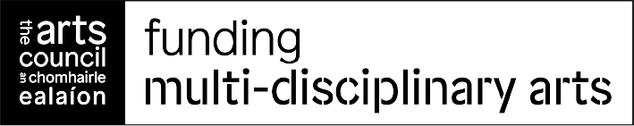

Sound Craft Studio
Hands-on sonic exploration workshops from Gweedore, Donegal on the Wild Atlantic Way.
Playful Systems
A free 2-day Interactive Technology Workshop with Soniphorm
Saturday 28 and Sunday 29 November 2026, 10am to 5pm
Soniphorm Soundcraft Studio, Gweedore, Co. Donegal
Applications close Saturday 14 November 2026
Over two days at the Soniphorm Soundcraft Studio in Gweedore, artist and creative technologist Ed Devane leads a hands-on workshop in the creative use of interactive technology.
Technology has never been more accessible or more powerful. A smartphone alone holds motion sensors, cameras, microphones and speakers, yet most of us only meet that power through apps designed by someone else. In the hands of creative people, these general-purpose tools can become something else entirely: gestural, performative, even invisible. They can be an extension of ourselves rather than a limit. The point is not for technology to be creative on our behalf, but to help us be creative.
What used to stand in the way was the code needed to join these things together, which once called for a software engineer. Ed's installation work has long depended on programming Arduino microcontrollers. A few years ago he began using AI to help write that code, and he has since tested a range of methods, with varying success. The workshop shares what works.
28 November
Day one, morning: examples of projects built this way, from a patching environment for microcontrollers to a piece that plays music at a particular spot on a Donegal beach. Then setting up participants' laptops, and a small first challenge to get a feel for the process.
Day one, afternoon: developing ideas, on paper first and then in pairs, pitching to each other to test and sharpen them. Ideas that hold up are then worked through with AI to find the right technology, ending the day with a written project plan.
29 November
Day two: build, test, refine. Projects can move beyond the screen using smartphones, ESP32 microcontrollers, sensors, motors and lights, and the studio's laser cutter and fabrication tools are available for physical prototypes. Performance is central to Ed's practice, and the weekend closes with an informal sharing, within the group, of the pieces developed.
Throughout, participants describe what they want in plain language rather than reading code. The tools can make almost anything look polished, but only a strong concept makes something worth building.
Who it's for
Participants need ideas, an interest in technology, confidence using computers, and a modern laptop. Everything else is provided, including tea and coffee, and there are places to eat nearby. The workshop is limited to 10 places (free of charge), offered through a short application form so the group starts from a similar level and learns from one another. Applications close on Saturday 14 November 2026.
Limited to 10 participants.
Apply by 14 November 2026
Apply for a Place
Saturday 28 and Sunday 29 November 2026, 10am to 5pm. Soniphorm Soundcraft Studio, Gweedore, Co. Donegal.
Applications close Saturday 14 November 2026.
Questions? DM @soniphorm on Instagram or join the Discord.
The workshop is funded by The Arts Council / An Chomhairle Ealaíon as part of its Digital Arts Policy.

About the Studio
Sound Craft Studio is a dedicated workshop space in Gweedore, Co. Donegal — a place to explore sound, resonance, and creative electronics in a hands-on setting. Run by sound artist and educator Ed Devane, the studio offers workshops for all levels, from curious beginners to experienced practitioners looking to deepen their practice.
Introduction Workshops
Beginner-friendly half-day sessions. Build your own contact microphone, learn to record with it, and take home your creation. No experience necessary — just curiosity.
- Solder and assemble a contact microphone
- Learn recording techniques and mic placement
- Guided listening walk around Gweedore
- Take home your microphone and recordings
Weekend Intensives
Specialist two-day deep dives for those who want to go further. Build instruments, work with Soniphorm hardware and the Patcher software, and develop your creative practice.
- Build and program a Smart Contact Microphone Kit
- Work with exciters, resonance, and feedback systems
- Field recording sessions on the Wild Atlantic Way
- Take home your kit and all your work
Group & School Sessions
Tailored workshops for schools, community groups, arts organisations, and festivals. Hands-on creative sessions designed for any age group or skill level.
- Customised to your group's needs and interests
- Available at the studio or your venue
- From single sessions to multi-week programmes
- All materials and equipment provided
Location
Gweedore (Gaoth Dobhair), Co. Donegal, Ireland — on the Wild Atlantic Way. The studio is located in a Gaeltacht area surrounded by some of the most inspiring landscapes in Ireland.
Stay in the Loop
Join the mailing list to hear about upcoming workshops, meetups, and Sound Craft Studio events.